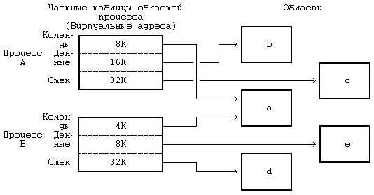
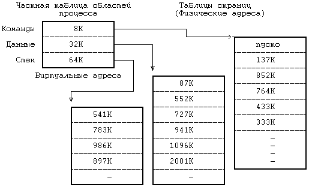
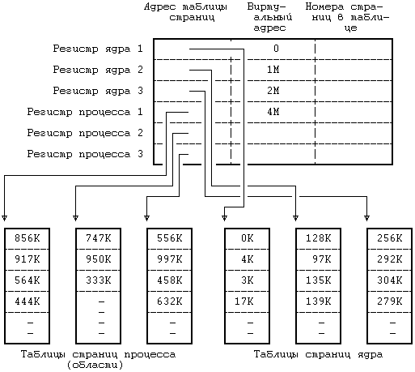
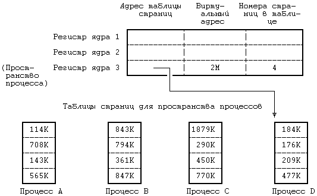

Предположим, что физическая память машины имеет адреса, начиная с 0 и кончая адресом, равным объему памяти в байтах. Как уже отмечалось в главе 2, процесс в системе UNIX состоит из трех логических секций: команд, данных и стека. (Общую память, которая рассматривается в главе 11, можно считать в данном контексте частью секции данных). В секции команд хранится набор машинных инструкций, исполняемых под управлением процесса; адресами в секции команд выступают адреса команд (для команд перехода и обращений к подпрограммам), адреса данных (для обращения к глобальным переменным) и адреса стека (для обращения к структурам данных, которые локализованы в подпрограммах). Если адреса в сгенерированном коде трактовать как адреса в физической памяти, два процесса не смогут параллельно выполняться, если их адреса перекрываются. Компилятор мог бы генерировать адреса, непересекающиеся у разных программ, но на универсальных ЭВМ такой порядок не практикуется, поскольку объем памяти машины ограничен, а количество транслируемых программы неограничено. Даже если для того, чтобы избежать излишнего пересечения адресов в процессе их генерации, машина будет использовать некоторый набор эвристических процедур, подобная реализация не будет достаточно гибкой и не сможет удовлетворять предъявляемым к ней требованиям.
Поэтому компилятор генерирует адреса для виртуального адресного пространства заданного диапазона, а устройство управления памятью, называемое диспетчером памяти, транслирует виртуальные адреса, сгенерированные компилятором, в адреса ячеек, расположенных в физической памяти. Компилятору нет необходимости знать, в какое место в памяти ядро потом загрузит выполняемую программу. На самом деле, в памяти одновременно могут существовать несколько копий программы: все они могут выполняться, используя одни и те же виртуальные адреса, фактически же ссылаясь на разные физические ячейки. Те подсистемы ядра и аппаратные средства, которые сотрудничают в трансляции виртуальных адресов в физические, образуют подсистему управления памятью.
Ядро в версии V делит виртуальное адресное пространство процесса на совокупность логических областей. Область - это непрерывная зона виртуального адресного пространства процесса, рассматриваемая в качестве отдельного объекта для совместного использования и защиты. Таким образом, команды, данные и стек обычно образуют автономные области, принадлежащие процессу. Несколько процессов могут использовать одну и ту же область. Например, если несколько процессов выполняют одну и ту же программу, вполне естественно, что они используют одну и ту же область команд. Точно так же, несколько процессов могут объединиться и использовать общую область разделяемой памяти.
Ядро поддерживает таблицу областей и выделяет запись в таблице для каждой активной области в системе. В разделе 6.5 описываются поля таблицы областей и операции над областями более подробно, но на данный момент предположим, что таблица областей содержит информацию, позволяющую определить местоположение области в физической памяти. Каждый процесс имеет частную таблицу областей процесса. Записи этой таблицы могут располагаться, в зависимости от конкретной реализации, в таблице процессов, в адресном пространстве процесса или в отдельной области памяти; для простоты предположим, что они являются частью таблицы процессов. Каждая запись частной таблицы областей содержит указатель на соответствующую запись общей таблицы областей и первый виртуальный адрес процесса в данной области. Разделяемые области могут иметь разные виртуальные адреса в каждом процессе. Запись частной таблицы областей также содержит поле прав доступа, в котором указывается тип доступа, разрешенный процессу: только чтение, только запись или только исполнение. Частная таблица областей и структура области аналогичны таблице файлов и структуре индекса в файловой системе: несколько процессов могут совместно использовать адресное пространство через область, подобно тому, как они разделяют доступ к файлу с помощью индекса; каждый процесс имеет доступ к области благодаря использованию записи в частной таблице областей, точно так же он обращается к индексу, используя соответствующие записи в таблице пользовательских дескрипторов файла и в таблице файлов, принадлежащей ядру.
На Рисунке 6.2 изображены два процесса, A и B, показаны их области, частные таблицы областей и виртуальные адреса, в которых эти области соединяются. Процессы разделяют область команд 'a' с виртуальными адресами 8К и 4К соответственно. Если процесс A читает ячейку памяти с адресом 8К, а процесс

Рисунок 6.2. Процессы и области
B читает ячейку с адресом 4К, то они читают одну и ту же ячейку в области 'a'. Область данных и область стека у каждого процесса свои.
Область является понятием, не зависящим от способа реализации управления памятью в операционной системе. Управление памятью представляет собой совокупность действий, выполняемых ядром с целью повышения эффективности совместного использования оперативной памяти процессами. Примерами способов управления памятью могут служить рассматриваемые в главе 9 замещение страниц памяти и подкачка по обращению. Понятие области также не зависит и от собственно распределения памяти: например, от того, делится ли память на страницы или на сегменты. С тем, чтобы заложить фундамент для перехода к описанию алгоритмов подкачки по обращению (глава 9), все приводимые здесь рассуждения относятся, в первую очередь, к организации памяти, базирующейся на страницах, однако это не предполагает, что система управления памятью основывается на указанных алгоритмах.
В этом разделе описывается модель организации памяти, которой мы будем пользоваться на протяжении всей книги, но которая не является особенностью системы UNIX. В организации памяти, базирующейся на страницах, физическая память разделяется на блоки одинакового размера, называемые страницами. Обычный размер страниц составляет от 512 байт до 4 Кбайт и определяется конфигурацией технических средств. Каждая адресуемая ячейка памяти содержится в некоторой странице и, следовательно, каждая ячейка памяти может адресоваться парой (номер страницы, смещение внутри страницы в байтах). Например, если объем машинной памяти составляет 2 в 32-й степени байт, а размер страницы 1 Кбайт, общее число страниц - 2 в 22-й степени; можно считать, что каждый 32-разрядный адрес состоит из 22-разрядного номера страницы и 10-разрядного смещения внутри страницы (Рисунок 6.3).
Когда ядро назначает области физические страницы памяти, необходимости в назначении смежных страниц и вообще в соблюдении какой-либо очередности при назначении не возникает. Целью страничной организации памяти является повышение гибкости назначения физической памяти, которое строится по аналогии с назначением дисковых блоков файлам в файловой системе. Как и при назначении блоков файлу, так и при назначении области страниц памяти, преследуется задача повышения гибкости и сокращения неиспользуемого (вследствие фрагментации) пространства памяти.
| Шестнадцатиричный адрес | 58432
|
|---|
| Двоичный | 0101 1000 0100 0011 0010
|
|---|
| Номер страницы, смещение внутри страницы | 01 0110 0001 | 00 0011 0010
|
|---|
| В шестнадцатиричной системе | 161 | 32
|
|---|
Рисунок 6.3. Адресация физической памяти по страницам
| Логический номер страницы | Физический номер страницы
|
|---|
| 0 | 177
|
| 1 | 54
|
| 2 | 209
|
| 3 | 17
|
Рисунок 6.4. Отображение логических номеров страниц на физические
Ядро устанавливает соотношение между виртуальными адресами области и машинными физическими адресами посредством отображения логических номеров страниц в области на физические номера страниц в машине, как это показано на Рисунке 6.4. Поскольку область это непрерывное пространство виртуальных адресов программы, логический номер страницы служит указателем на элемент массива физических номеров страниц. Запись таблицы областей содержит указатель на таблицу физических номеров страниц, именуемую таблицей страниц. Записи таблицы страниц содержат машинно-зависимую информацию, такую как права доступа на чтение или запись страницы. Ядро поддерживает таблицы страниц в памяти и обращается к ним так же, как и ко всем остальным структурам данных ядра.
На Рисунке 6.5 приведен пример отображения процесса в физические адреса памяти. Пусть размер страницы составляет 1 Кбайт и пусть процессу нужно обратиться к объекту в памяти, имеющему виртуальный адрес 68432. Из таблицы областей видно, что виртуальный адрес начала области стека - 65536 (64К), если предположить, что стек растет в направлении увеличения адресов. После вычитания этого адреса из адреса 68432 получаем смещение в байтах внутри области, равное 2896. Так как каждая страница имеет размер 1 Кбайт, адрес указывает со смещением 848 на 2-ю (начиная с 0) страницу области, расположенной по физическому адресу 986К. В разделе 6.5.5 (где идет речь о загрузке области) рассматривается случай, когда запись таблицы страниц помечается "пустой".
В современных машинах используются разнообразные аппаратные регистры и кеши, которые повышают скорость выполнения вышеописанной процедуры трансляции адресов и без которых пересылки в памяти и адресные вычисления чересчур бы замедлились. Возобновляя выполнение процесса, ядро посредством загрузки соответствующих регистров сообщает техническим средствам управления памятью о том, в каких физических адресах выполняется процесс и где располагаются таблицы страниц. Поскольку такие операции являются машинно-зависимыми и в разных версиях реализуются по-разному, здесь мы их рассматривать не будем. Часть вопросов, связанных с архитектурой вычислительных систем, затрагивается в упражнениях.

Рисунок 6.5. Преобразование виртуальных адресов в физические
Организацию управления памятью попробуем пояснить на следующем простом примере. Пусть память разбита на страницы размером 1 Кбайт каждая, обращение к которым осуществляется через описанные ранее таблицы страниц. Регистры управления памятью в системе группируются по три; первый регистр в тройке содержит адрес таблицы страниц в физической памяти, второй регистр содержит первый виртуальный адрес, отображаемый с помощью тройки регистров, третий регистр содержит управляющую информацию, такую как номера страниц в таблице страниц и права доступа к страницам (только чтение, чтение и запись). Такая модель соответствует вышеописанной модели области. Когда ядро готовит процесс к выполнению, оно загружает тройки регистров соответствующей информацией из записей частной таблицы областей процесса.
Если процесс обращается к ячейкам памяти, расположенным за пределами принадлежащего ему виртуального пространства, создается исключительная ситуация. Например, если область команд имеет размер 16 Кбайт (Рисунок 6.5), а процесс обращается к виртуальному адресу 26К, создается исключительная ситуация, обрабатываемая операционной системой. То же самое происходит, если процесс пытается обратиться к памяти, не имея соответствующих прав доступа, например, пытается записать адрес в защищенную от записи область команд. И в том, и в другом примере процесс обычно завершается (более подробно об этом в следующей главе).
Несмотря на то, что ядро работает в контексте процесса, отображение виртуальных адресов, связанных с ядром, осуществляется независимо от всех процессов. Программы и структуры данных ядра резидентны в системе и совместно используются всеми процессами. При запуске системы происходит загрузка программ ядра в память с установкой соответствующих таблиц и регистров для отображения виртуальных адресов ядра в физические. Таблицы страниц для ядра имеют структуру, аналогичную структуре таблицы страниц, связанной с процессом, а механизмы отображения виртуальных адресов ядра похожи на механизмы, используемые для отображения пользовательских адресов. На многих машинах виртуальное адресное пространство процесса разбивается на несколько классов, в том числе системный и пользовательский, и каждый класс имеет свои собственные таблицы страниц. При работе в режиме ядра система разрешает доступ к адресам ядра, при работе же в режиме задачи такого рода доступ запрещен. Поэтому, когда в результате прерывания или выполнения системной функции происходит переход из режима задачи в режим ядра, операционная система по договоренности с техническими средствами разрешает ссылки на адреса ядра, а при возврате в режим ядра эти ссылки уже запрещены. В других машинах можно менять преобразование виртуальных адресов, загружая специальные регистры во время работы в режиме ядра.
На Рисунке 6.6 приведен пример, в котором виртуальные адреса от 0 до 4М-1 принадлежат ядру, а начиная с 4М - процессу. Имеются две группы регистров управления памятью, одна для адресов ядра и одна для адресов процесса, причем каждой группе соответствует таблица страниц, хранящая номера физических страниц со ссылкой на адреса виртуальных страниц. Адресные ссылки с использованием группы регистров ядра допускаются системой только в режиме ядра; следовательно, для перехода между режимом ядра и режимом задачи требуется только, чтобы система разрешила или запретила адресные ссылки с использованием группы регистров ядра.
В некоторых системах ядро загружается в память таким образом, что большая часть виртуальных адресов ядра совпадает с физическими адресами и функция преобразования виртуальных адресов в физические превращается в функцию тождественности. Работа с пространством процесса, тем не менее, требует, чтобы преобразование виртуальных адресов в физические производилось ядром.

Рисунок 6.6. Переключение режима работы с непривилегированного (режима задачи) на привилегированный (режим ядра)
Каждый процесс имеет свое собственное пространство, однако ядро обращается к пространству выполняющегося процесса так, как если бы в системе оно было единственным. Ядро подбирает для текущего процесса карту трансляции виртуальных адресов, необходимую для работы с пространством процесса. При компиляции загрузчик назначает переменной 'u' (имени пространства процесса) фиксированный виртуальный адрес. Этот адрес известен остальным компонентам ядра, в частности модулю, выполняющему переключение контекста (раздел 6.4.3). Ядру также известно, какие таблицы управления памятью используются при трансляции виртуальных адресов, принадлежащих пространству процесса, и благодаря этому ядро может быстро перетранслировать виртуальный адрес пространства процесса в другой физический адрес. По одному и тому же виртуальному адресу ядро может получить доступ к двум разным физическим адресам, описывающим пространства двух процессов.
Процесс имеет доступ к своему пространству, когда выполняется в режиме ядра, но не тогда, когда выполняется в режиме задачи. Поскольку ядро в каждый момент времени работает только с одним пространством процесса, используя для доступа виртуальный адрес, пространство процесса частично описывает контекст процесса, выполняющегося в системе. Когда ядро выбирает процесс для исполнения, оно ищет в физической памяти соответствующее процессу пространство и делает его доступным по виртуальному адресу.

Рисунок 6.7. Карта памяти пространства процесса в ядре
Предположим, например, что пространство процесса имеет размер 4 Кбайта и помещается по виртуальному адресу 2М. На Рисунке 6.7 показана карта памяти, где первые два регистра из группы относятся к программам и данным ядра (адреса и указатели не показаны), а третий регистр адресует к пространству процесса D. Если ядру нужно обратиться к пространству процесса A, оно копирует связанную с этим пространством информацию из соответствующей таблицы страниц в третий регистр. В любой момент третий регистр ядра описывает пространство текущего процесса, но ядро может сослаться на пространство другого процесса, переписав записи в таблице страниц с новым адресом. Информация в регистрах 1 и 2 для ядра неизменна, поскольку все процессы совместно используют программы и данные ядра.
Предыдущая глава || Оглавление || Следующая глава